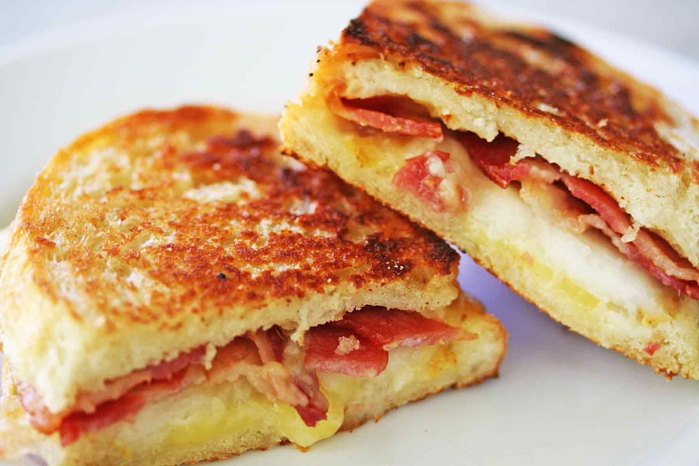

Grilled Cheese

This will explain how to make a grilled cheese and how easy it is, and how it's really hard to fail at it and even a child could make it. Like, a very young, not-even-talking-age child could cook this successfully. Even if this child had a disability they could still make this.
Ingredients
- Bread of your choice (2 per sandwich, unless you're making some kind of big mac like sandwich)
- Butter
- Cheese (your choice, more variety is always welcome)
- Heat a pan with some butter in it to medium heat
- throw your bread in the toaster on low just to get a light crunch
- Generously butter your lightly toasted bread on the outside surfaces of the sandwich
- cut your cheeses to a consistent-ish thickness and layer on an unbuttered side of bread
- Once the pan is to temp, put the loaded half of your sandwich in, buttered side down
- Place other slice of buttered bread on top of sandwich, buttered side up
- let cook for a minute or two, then carefully flip sandwich
- Once cheese is melted through, you're ready to eat! Just make sure to not burn the sandwich in the process
Home